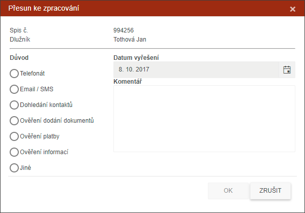

Přesun Ke zpracování
- Spis lze přesunout do záložky KE ZPRACOVÁNÍ v případě, že se jedná o spis, kde není naplánovaná OSN. Přesun ke zpracování se provede na základě změny stavu. Při stisku tlačítka bude otevřen dialog s číselníkem, kde uživatel vybere důvod odložení spisu, komentář a datum splnění.
- Inspektor má možnost přesunout spis na záložku KE ZPRACOVÁNÍ i v případě, že má naplánovanou OSN – k přesunu dochází na základě procesu (Zápis z OSN, Kontakt s dlužníkem), v rámci tohoto akčního tlačítka však nelze spis s naplánovanou osobní schůzkou přesunout.

S přesunem se zároveň nastaví REMINDER, který pohlídá termíny splnění. Tento stav je vidět v seznamu (Záložka Ke zpracování) v poli Stav a je možno si dle něj spisy „grupovat“/třídit/řadit.
Tlačítko je nepřístupné, pokud není vybrán žádný spis.
Typy důvodů, proč je spis přesunut do záložky Ke zpracování:
- Telefonát
- Mail / SMS
- Dohledání kontaktů
- Ověření dodání dokumentů
- Ověření platby
- Ověření informací
- Jiné + popis důvodu